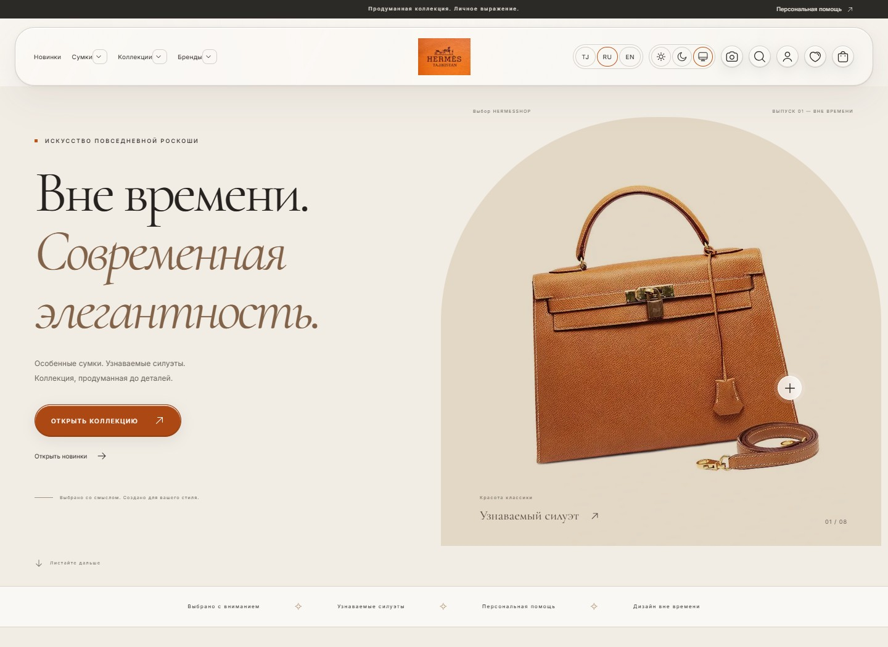

01
Веб-разработка
От адаптивной вёрстки до логики приложения и работы с данными.
Привет, я Махмуджон
JUNIOR AI & WEB DEVELOPER
Создаю веб-продукты и изучаю AI.
Люблю, когда хорошая идея становится
чем-то настоящим.
Моё резюме оживает в объёме.
Пролетите над страницей — от знакомства
до проектов и идей на будущее.
Я Махмуджон, начинающий AI- и веб-разработчик. Мне интересно, как код и искусственный интеллект помогают создавать полезные продукты.
Учусь на втором курсе Технологического университета Таджикистана. Получаю практический опыт в собственных IT-проектах: разрабатываю интерфейсы, работаю с API и применяю AI-инструменты при написании и анализе кода.
2-й курс · Высшее образование в процессе
Инструменты, с которыми учусь,
экспериментирую и создаю.
От адаптивной вёрстки до логики приложения и работы с данными.
Генеративный ИИ как инструмент для разработки и поиска решений.
Всё, что помогает организовать работу и соединить части продукта.

Платформа электронной коммерции, на которой я получаю практический опыт разработки полноценного веб-продукта.
Моя цель — развиваться как AI Developer, углублять знания в Machine Learning и Generative AI и работать над полезными продуктами в команде.
HERMESSHOP в движении: силуэты, детали
и характер магазина в анимационной презентации.
Есть идея, проект или предложение?
Напишите мне — всё начинается с разговора.